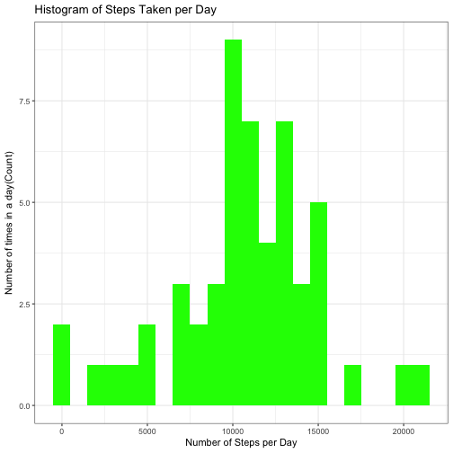
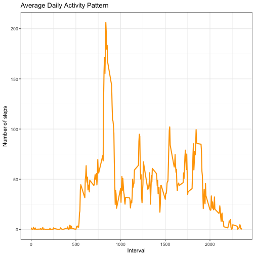
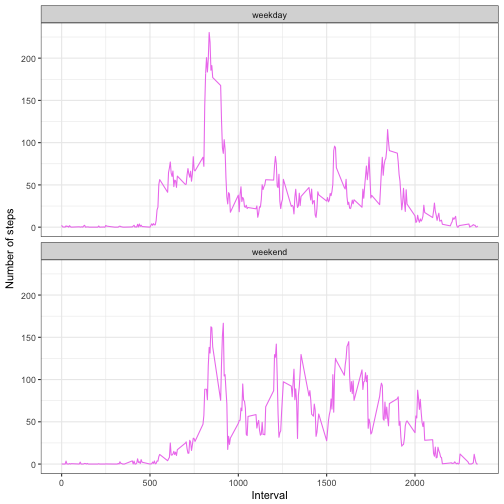

This document presents the results of peer assessments 1 of course Reproducible Research on coursera. This assignment makes use of data from a personal activity monitoring device. This device collects data at 5 minute intervals through out the day. The data consists of two months of data from an anonymous individual collected during the months of October and November, 2012 and include the number of steps taken in 5 minute intervals each day.
library(knitr)
opts_chunk$set(echo = TRUE, results = 'hold')
library(ggplot2)
data<- read.csv('activity.csv', header = TRUE, sep = ",",
colClasses=c("numeric", "character", "numeric"))
data$date<- as.Date(data$date, format = "%Y-%m-%d")
data$interval <- as.factor(data$interval)
stepsPerDay <- aggregate(steps~date, data, sum)
colnames(stepsPerDay) <- c("date", "steps")
head(stepsPerDay)
## date steps
## 1 2012-10-02 126
## 2 2012-10-03 11352
## 3 2012-10-04 12116
## 4 2012-10-05 13294
## 5 2012-10-06 15420
## 6 2012-10-07 11015
ggplot(stepsPerDay, aes(x = steps)) +
geom_histogram(fill = "green", binwidth = 1000) +
labs(title="Histogram of Steps Taken per Day",
x = "Number of Steps per Day", y = "Number of times in a day(Count)") + theme_bw()

stepsMean <- mean(stepsPerDay$steps, na.rm = TRUE)
stepsMedian <- median(stepsPerDay$steps, na.rm = TRUE)
The mean is 10766.189 and median is 10765
stepsPerInterval <- aggregate(data$steps,
by = list(interval = data$interval),
FUN=mean, na.rm=TRUE)
#convert to integers
##this helps in plotting
stepsPerInterval$interval <-
as.integer(levels(stepsPerInterval$interval)[stepsPerInterval$interval])
colnames(stepsPerInterval) <- c("interval", "steps")
ggplot(stepsPerInterval, aes(x=interval, y=steps)) +
geom_line(color="orange", size=1) +
labs(title="Average Daily Activity Pattern", x="Interval", y="Number of steps") +
theme_bw()

maxInterval <- stepsPerInterval[which.max(stepsPerInterval$steps),]
The 835 interval has maximum 206 steps.
missingVals <- sum(is.na(data$steps))
The total number of missing values are 2304
To populate missing values, we choose to replace them with the mean value at the same interval across days.
We create a function na_fill(d, p) in which the 'd' argument is the 'data' data frame and 'p' arguement is the stepsPerInterval data frame.
na_fill <- function(d, p) {
na_index <- which(is.na(d$steps))
na_replace <- unlist(lapply(na_index, FUN=function(idx){
interval = d[idx,]$interval
p[p$interval == interval,]$steps
}))
fill_steps <- d$steps
fill_steps[na_index] <- na_replace
fill_steps
}
data_fill <- data.frame(
steps = na_fill(data, stepsPerInterval),
date = data$date,
interval = data$interval)
str(data_fill)
sum(is.na(data_fill$steps))
## 'data.frame': 17568 obs. of 3 variables:
## $ steps : num 1.717 0.3396 0.1321 0.1509 0.0755 ...
## $ date : Date, format: "2012-10-01" "2012-10-01" ...
## $ interval: Factor w/ 288 levels "0","5","10","15",..: 1 2 3 4 5 6 7 8 9 10 ...
## [1] 0
The out put shows that there are no missing values in the new data set.
fillStepsPerDay <- aggregate(steps ~ date, data_fill, sum)
colnames(fillStepsPerDay) <- c("date","steps")
##plotting the histogram
ggplot(fillStepsPerDay, aes(x = steps)) +
geom_histogram(fill = "blue", binwidth = 1000) +
labs(title="Histogram of Steps Taken per Day",
x = "Number of Steps per Day", y = "Number of times in a day(Count)") + theme_bw()
stepsMeanFill <- mean(fillStepsPerDay$steps, na.rm = TRUE)
stepsMedianFill <- median(fillStepsPerDay$steps, na.rm = TRUE)
The new mean obtained after filling in the missing values is 10766.189
The new median obtained after filling in the missing values is 10766.189
Old Estimates: Mean is 10766.189 and the Median is 10765
New Estimates: Mean is 10766.189 and the Median is 10766.189
We observe that the means are the same but the medians differ slightly.
We do this comparison with the table with filled-in missing values.
weekdays_steps <- function(d) {
weekdays_steps <- aggregate(d$steps, by=list(interval = d$interval),
FUN=mean, na.rm=T)
# convert to integers for plotting
weekdays_steps$interval <-
as.integer(levels(weekdays_steps$interval)[weekdays_steps$interval])
colnames(weekdays_steps) <- c("interval", "steps")
weekdays_steps
}
data_by_weekdays <- function(d) {
d$weekday <-
as.factor(weekdays(d$date)) # weekdays
weekend_data <- subset(d, weekday %in% c("Saturday","Sunday"))
weekday_data <- subset(d, !weekday %in% c("Saturday","Sunday"))
weekend_steps <- weekdays_steps(weekend_data)
weekday_steps <- weekdays_steps(weekday_data)
weekend_steps$dayofweek <- rep("weekend", nrow(weekend_steps))
weekday_steps$dayofweek <- rep("weekday", nrow(weekday_steps))
data_by_weekdays <- rbind(weekend_steps, weekday_steps)
data_by_weekdays$dayofweek <- as.factor(data_by_weekdays$dayofweek)
data_by_weekdays
}
data_weekdays <- data_by_weekdays(data_fill)
ggplot(data_weekdays, aes(x=interval, y=steps)) +
geom_line(color="violet") +
facet_wrap(~ dayofweek, nrow=2, ncol=1) +
labs(x="Interval", y="Number of steps") +
theme_bw()

By observing the graph above the activity on the weekday's has the greatest peak from all steps intervals. But, we can also observe that weekends activities has more peaks over a hundred than weekdays.